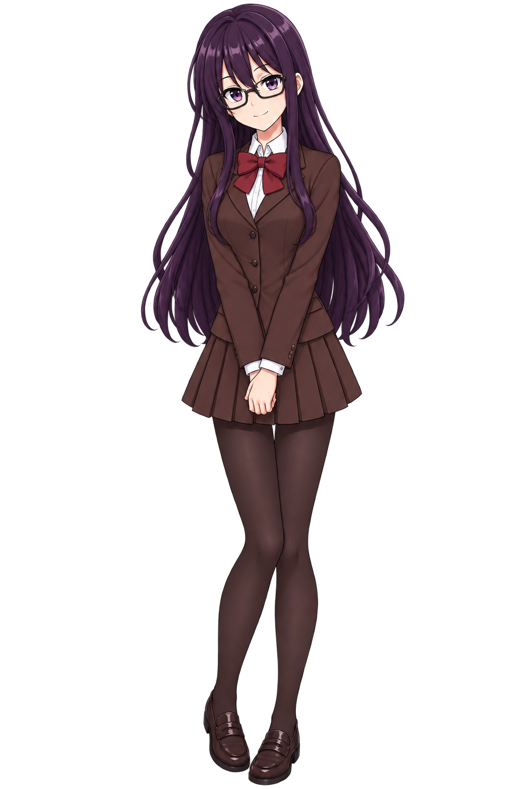
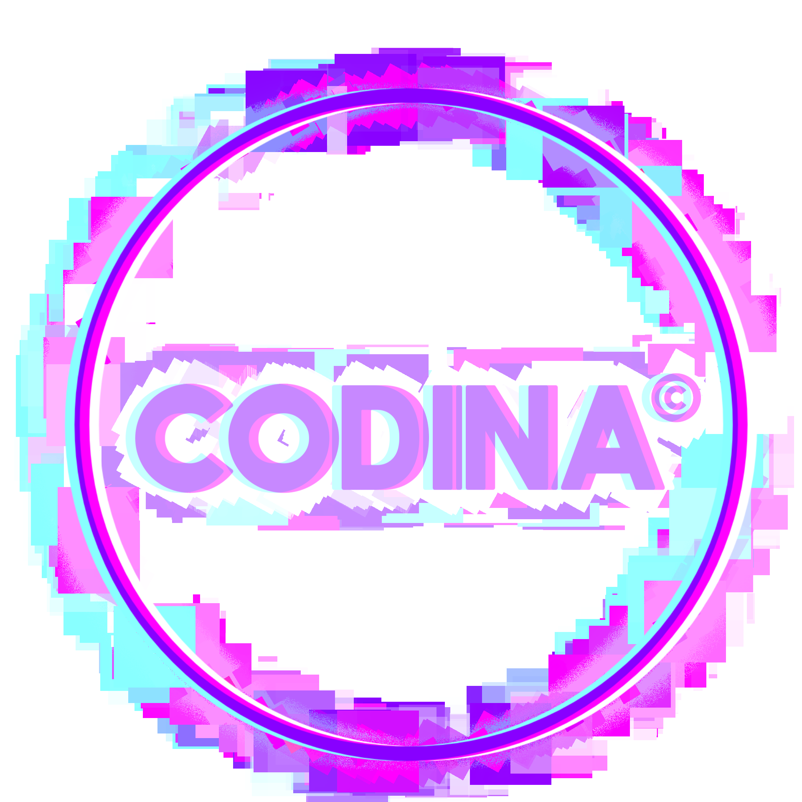
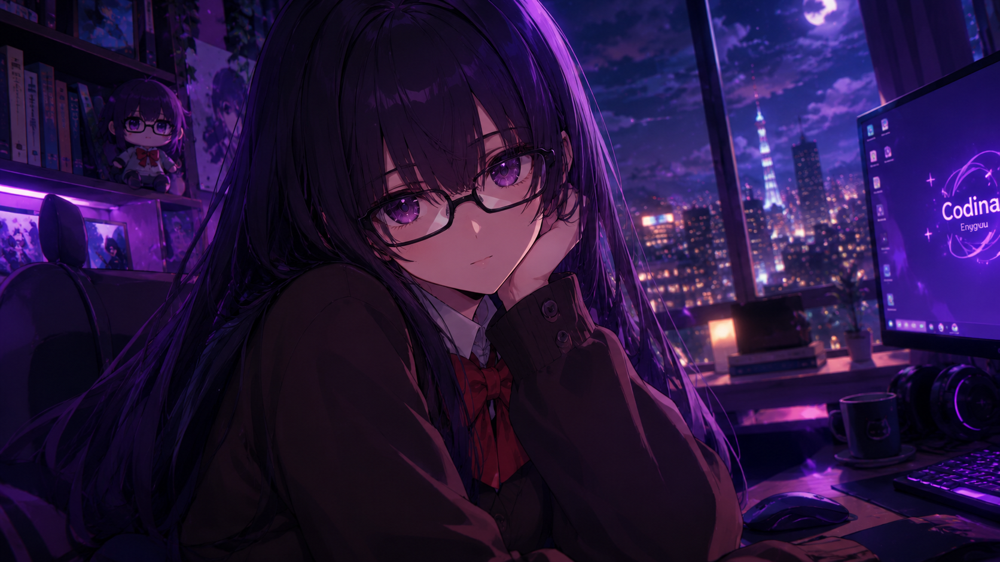

No. 01Protagonista
Codina Enygyuu
Uma garota que viaja por outros mundos enquanto dorme.

UMA HISTÓRIA ENTRE MUNDOS
Uma garota. Outros mundos. Uma história ainda em movimento.
SITE OFICIAL DA PERSONAGEM

コディナ・エニギュウSOBRE A OBRA
Conheça um pouco da história de Codina Enygyuu.
Luck Enygyuu é um gênio que, desde jovem, construiu coisas únicas e inusitadas. Mas esta não é a história dele, e sim a de sua irmã, Codina Enygyuu. Codina é uma garota comum, com uma rotina comum, até que um dia algo completamente inesperado acontece e muda sua vida para sempre.
Luck Enygyuu é um gênio que, com apenas 8 anos de idade, tornou-se conhecido em todo o país de Arievi por suas ideias incomuns. Aos 12 anos, ganhou ainda mais reconhecimento por suas obras inusitadas e construções únicas, revolucionando a tecnologia da época e tornando-a mais prática.
Por causa de suas realizações, Luck e sua família acabaram se tornando algumas das pessoas mais influentes do mundo, posição que mantêm até os dias atuais.
Mas esta não é a história de Luck. Esta é a história de sua irmã, Codina Enygyuu.
Codina é uma garota comum, com uma rotina comum. Diferentemente do irmão, ela não é uma pessoa extraordinariamente inteligente. Nunca realizou nada grandioso e tampouco desejou chamar a atenção. Mesmo assim, muitas pessoas esperam algo dela.
O ELENCO DA HISTÓRIA
Conheça aqueles que fazem parte deste universo.

No. 01Protagonista
Uma garota que viaja por outros mundos enquanto dorme.
Novos personagens serão apresentados aqui.
ALÉM DA REALIDADE
Diferentes mundos, realidades e mistérios.
O universo de Codina conecta diferentes realidades e guarda histórias que ainda serão descobertas.